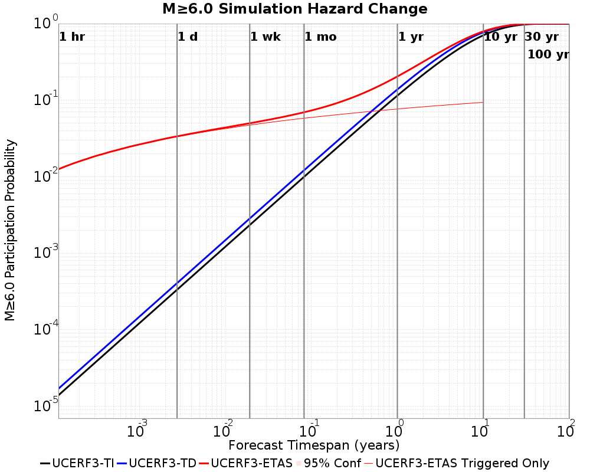
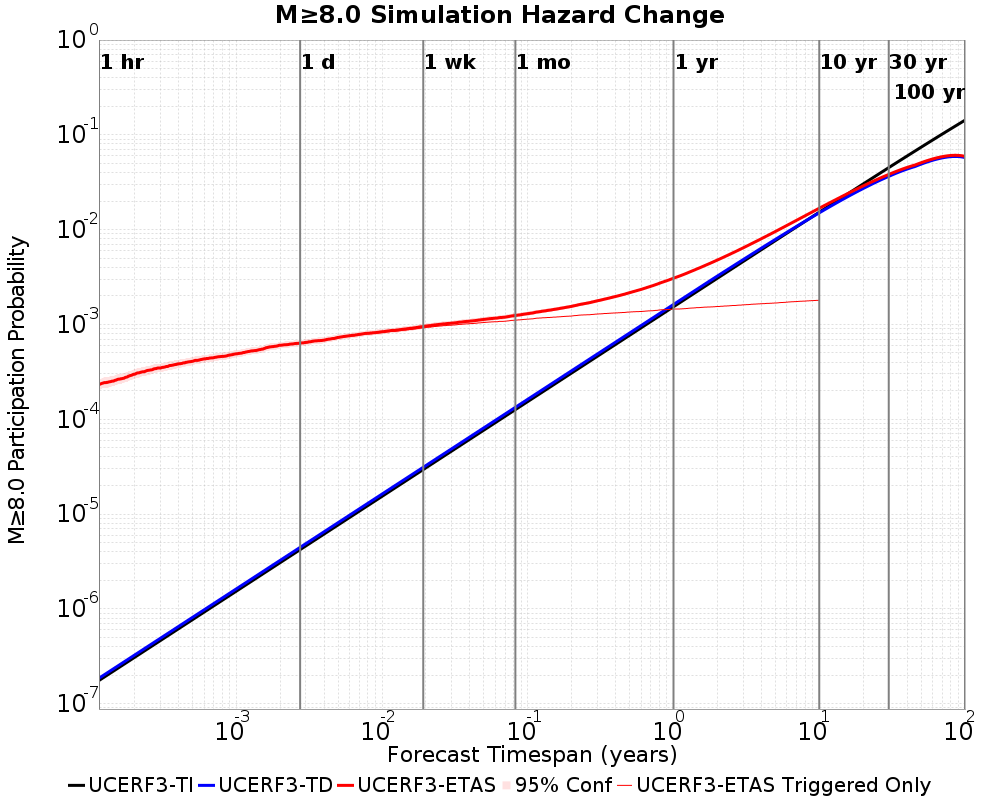
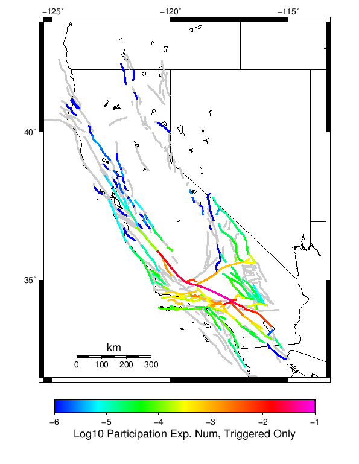
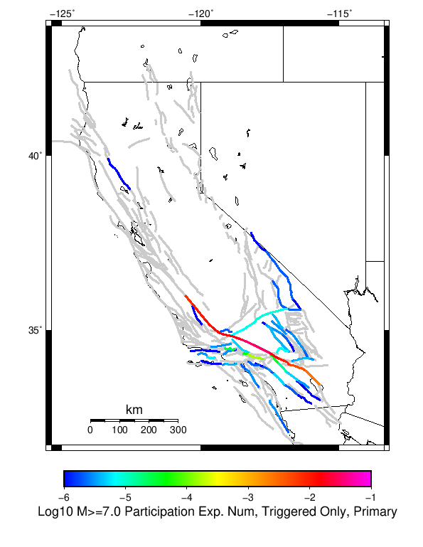
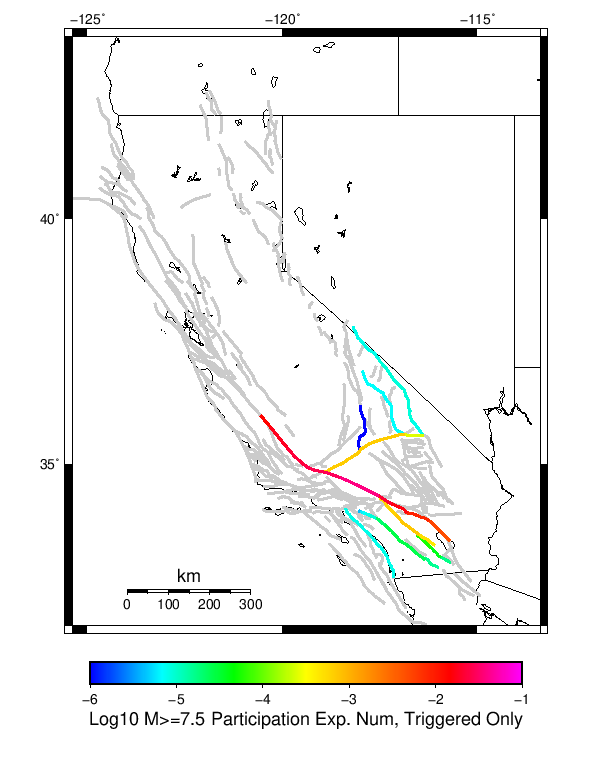
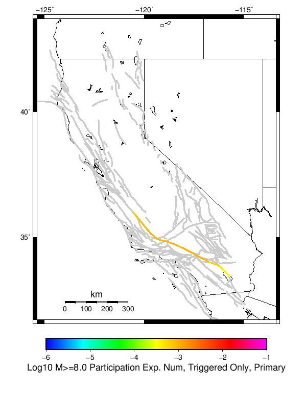

| Mojave Point M6 | |
|---|---|
| Num Simulations | 500000 |
| Start Time | 2019/01/01 00:00:00 UTC |
| Start Time Epoch Milliseconds | 1546300800000 |
| Duration | 10 Years |
| Includes Spontaneous? | false |
| Historical Ruptures | (none) |
Legend
| Mag | Mean | 2.5 %ile | 97.5 %ile | Median | Mode | 10 yr Probability | Primary Aftershocks Mean |
|---|---|---|---|---|---|---|---|
| M≥5 | 4.608 | 0.000 | 67.000 | 1.000 | 0.000 | 0.532 | 0.528 |
| M≥5.1 | 3.630 | 0.000 | 53.000 | 0.000 | 0.000 | 0.460 | 0.420 |
| M≥5.2 | 2.851 | 0.000 | 41.000 | 0.000 | 0.000 | 0.393 | 0.334 |
| M≥5.3 | 2.235 | 0.000 | 32.000 | 0.000 | 0.000 | 0.333 | 0.265 |
| M≥5.4 | 1.745 | 0.000 | 25.000 | 0.000 | 0.000 | 0.281 | 0.211 |
| M≥5.5 | 1.355 | 0.000 | 19.000 | 0.000 | 0.000 | 0.236 | 0.168 |
| M≥5.6 | 1.045 | 0.000 | 15.000 | 0.000 | 0.000 | 0.197 | 0.134 |
| M≥5.7 | 0.800 | 0.000 | 11.000 | 0.000 | 0.000 | 0.165 | 0.107 |
| M≥5.8 | 0.604 | 0.000 | 9.000 | 0.000 | 0.000 | 0.137 | 0.085 |
| M≥5.9 | 0.449 | 0.000 | 6.000 | 0.000 | 0.000 | 0.114 | 0.068 |
| M≥6 | 0.330 | 0.000 | 5.000 | 0.000 | 0.000 | 0.095 | 0.054 |
| M≥6.1 | 0.242 | 0.000 | 4.000 | 0.000 | 0.000 | 0.079 | 0.043 |
| M≥6.2 | 0.196 | 0.000 | 3.000 | 0.000 | 0.000 | 0.074 | 0.040 |
| M≥6.3 | 0.170 | 0.000 | 3.000 | 0.000 | 0.000 | 0.069 | 0.037 |
| M≥6.4 | 0.160 | 0.000 | 2.000 | 0.000 | 0.000 | 0.069 | 0.037 |
| M≥6.5 | 0.157 | 0.000 | 2.000 | 0.000 | 0.000 | 0.069 | 0.037 |
| M≥6.6 | 0.120 | 0.000 | 2.000 | 0.000 | 0.000 | 0.065 | 0.035 |
| M≥6.7 | 0.112 | 0.000 | 2.000 | 0.000 | 0.000 | 0.064 | 0.034 |
| M≥6.8 | 0.095 | 0.000 | 1.000 | 0.000 | 0.000 | 0.063 | 0.034 |
| M≥6.9 | 0.092 | 0.000 | 1.000 | 0.000 | 0.000 | 0.062 | 0.034 |
| M≥7 | 0.087 | 0.000 | 1.000 | 0.000 | 0.000 | 0.062 | 0.034 |
| M≥7.1 | 0.073 | 0.000 | 1.000 | 0.000 | 0.000 | 0.061 | 0.033 |
| M≥7.2 | 0.067 | 0.000 | 1.000 | 0.000 | 0.000 | 0.061 | 0.033 |
| M≥7.3 | 0.058 | 0.000 | 1.000 | 0.000 | 0.000 | 0.053 | 0.029 |
| M≥7.4 | 0.055 | 0.000 | 1.000 | 0.000 | 0.000 | 0.053 | 0.029 |
| M≥7.5 | 0.043 | 0.000 | 1.000 | 0.000 | 0.000 | 0.041 | 0.022 |
| M≥7.6 | 0.037 | 0.000 | 1.000 | 0.000 | 0.000 | 0.035 | 0.019 |
| M≥7.7 | 0.032 | 0.000 | 1.000 | 0.000 | 0.000 | 0.032 | 0.017 |
| M≥7.8 | 0.026 | 0.000 | 1.000 | 0.000 | 0.000 | 0.026 | 0.014 |
| M≥7.9 | 8.01E-3 | 0.000 | 0.000 | 0.000 | 0.000 | 8.01E-3 | 4.30E-3 |
| M≥8 | 2.00E-3 | 0.000 | 0.000 | 0.000 | 0.000 | 2.00E-3 | 1.06E-3 |
| M≥8.1 | 6.56E-4 | 0.000 | 0.000 | 0.000 | 0.000 | 6.56E-4 | 3.32E-4 |
| M≥8.2 | 0.000 | 0.000 | 0.000 | 0.000 | 0.000 | 0.000 | 0.000 |
| M≥8.3 | 0.000 | 0.000 | 0.000 | 0.000 | 0.000 | 0.000 | 0.000 |
| M≥8.4 | 0.000 | 0.000 | 0.000 | 0.000 | 0.000 | 0.000 | 0.000 |
| M≥8.5 | 0.000 | 0.000 | 0.000 | 0.000 | 0.000 | 0.000 | 0.000 |
| M≥8.6 | 0.000 | 0.000 | 0.000 | 0.000 | 0.000 | 0.000 | 0.000 |
| M≥8.7 | 0.000 | 0.000 | 0.000 | 0.000 | 0.000 | 0.000 | 0.000 |
| M≥8.8 | 0.000 | 0.000 | 0.000 | 0.000 | 0.000 | 0.000 | 0.000 |
| M≥8.9 | 0.000 | 0.000 | 0.000 | 0.000 | 0.000 | 0.000 | 0.000 |
| M≥9 | 0.000 | 0.000 | 0.000 | 0.000 | 0.000 | 0.000 | 0.000 |
These plots show how the probability of ruptures of various magnitudes within 100km of any scenario rupture changes over time

| Forecast Duration | UCERF3-ETAS [95% Conf] | UCERF3-ETAS Triggered Only | UCERF3-TD | UCERF3-TI |
|---|---|---|---|---|
| 1 Hour | 0.113 [0.113 - 0.114] | 0.113 | 8.84E-5 | 8.54E-5 |
| 1 Day | 0.262 [0.261 - 0.263] | 0.261 | 2.12E-3 | 2.05E-3 |
| 1 Week | 0.350 [0.348 - 0.351] | 0.340 | 0.015 | 0.014 |
| 1 Month | 0.429 [0.428 - 0.431] | 0.392 | 0.062 | 0.060 |
| 1 Year | 0.756 [0.755 - 0.756] | 0.469 | 0.539 | 0.527 |
| 10 Years | 1.000 [1.000 - 1.000] | 0.529 | 1.000 | 0.999 |
| 30 Years | 1.000 [1.000 - 1.000] * | * | 1.000 | 1.000 |
| 100 Years | 1.000 [1.000 - 1.000] * | * | 1.000 | 1.000 |
* forecast duration is longer than simulation length, only ETAS ruptures from the first 10 years are included

| Forecast Duration | UCERF3-ETAS [95% Conf] | UCERF3-ETAS Triggered Only | UCERF3-TD | UCERF3-TI |
|---|---|---|---|---|
| 1 Hour | 0.013 [0.012 - 0.013] | 0.013 | 1.69E-5 | 1.39E-5 |
| 1 Day | 0.034 [0.034 - 0.035] | 0.034 | 4.06E-4 | 3.33E-4 |
| 1 Week | 0.050 [0.050 - 0.051] | 0.048 | 2.84E-3 | 2.33E-3 |
| 1 Month | 0.070 [0.069 - 0.071] | 0.059 | 0.012 | 9.95E-3 |
| 1 Year | 0.204 [0.204 - 0.205] | 0.077 | 0.138 | 0.115 |
| 10 Years | 0.792 [0.791 - 0.792] | 0.094 | 0.770 | 0.704 |
| 30 Years | 0.987 [0.987 - 0.987] * | * | 0.986 | 0.974 |
| 100 Years | 1.000 [1.000 - 1.000] * | * | 1.000 | 1.000 |
* forecast duration is longer than simulation length, only ETAS ruptures from the first 10 years are included

| Forecast Duration | UCERF3-ETAS [95% Conf] | UCERF3-ETAS Triggered Only | UCERF3-TD | UCERF3-TI |
|---|---|---|---|---|
| 1 Hour | 8.02E-3 [7.78E-3 - 8.27E-3] | 8.01E-3 | 7.08E-6 | 6.07E-6 |
| 1 Day | 0.022 [0.021 - 0.022] | 0.022 | 1.70E-4 | 1.46E-4 |
| 1 Week | 0.032 [0.031 - 0.032] | 0.031 | 1.19E-3 | 1.02E-3 |
| 1 Month | 0.043 [0.042 - 0.043] | 0.038 | 5.09E-3 | 4.36E-3 |
| 1 Year | 0.107 [0.107 - 0.108] | 0.050 | 0.060 | 0.052 |
| 10 Years | 0.489 [0.488 - 0.489] | 0.062 | 0.455 | 0.412 |
| 30 Years | 0.826 [0.826 - 0.827] * | * | 0.815 | 0.797 |
| 100 Years | 0.986 [0.986 - 0.986] * | * | 0.986 | 0.995 |
* forecast duration is longer than simulation length, only ETAS ruptures from the first 10 years are included

| Forecast Duration | UCERF3-ETAS [95% Conf] | UCERF3-ETAS Triggered Only | UCERF3-TD | UCERF3-TI |
|---|---|---|---|---|
| 1 Hour | 2.44E-4 [2.04E-4 - 2.93E-4] | 2.44E-4 | 1.85E-7 | 1.76E-7 |
| 1 Day | 6.98E-4 [6.28E-4 - 7.76E-4] | 6.94E-4 | 4.45E-6 | 4.21E-6 |
| 1 Week | 1.07E-3 [9.81E-4 - 1.16E-3] | 1.04E-3 | 3.12E-5 | 2.95E-5 |
| 1 Month | 1.37E-3 [1.28E-3 - 1.47E-3] | 1.24E-3 | 1.34E-4 | 1.26E-4 |
| 1 Year | 3.23E-3 [3.12E-3 - 3.35E-3] | 1.61E-3 | 1.62E-3 | 1.54E-3 |
| 10 Years | 0.017 [0.017 - 0.017] | 2.00E-3 | 0.015 | 0.015 |
| 30 Years | 0.038 [0.038 - 0.039] * | * | 0.036 | 0.045 |
| 100 Years | 0.060 [0.059 - 0.060] * | * | 0.058 | 0.143 |
* forecast duration is longer than simulation length, only ETAS ruptures from the first 10 years are included
| Min Mag | Triggered Ruptures (no spontaneous) | Triggered Ruptures (primary aftershocks only) |
|---|---|---|
| All Supra. Seis. |  |  |
| M≥6.5 |  |  |
| M≥7 |  |  |
| M≥7.5 |  |  |
| M≥8 |  |  |
First 10 of 139 with matching ruptures shown
| Parent Name | Triggered Mean Count | Triggered 10 Year Prob | Triggered Primary Mean Count |
|---|---|---|---|
| San Andreas (Mojave S) | 0.061852 | 0.061414 | 0.033618 |
| San Andreas (San Bernardino N) | 0.035566 | 0.035358 | 0.01787 |
| San Andreas (Mojave N) | 0.033688 | 0.033638 | 0.018282 |
| San Andreas (Big Bend) | 0.026778 | 0.02676 | 0.014516 |
| San Andreas (Carrizo) rev | 0.023552 | 0.02353 | 0.01277 |
| Cucamonga | 0.02272 | 0.02272 | 0.001004 |
| San Andreas (San Bernardino S) | 0.019954 | 0.019902 | 0.010192 |
| San Andreas (Cholame) rev | 0.019414 | 0.019404 | 0.010344 |
| San Andreas (Parkfield) | 0.015806 | 0.015774 | 0.007892 |
| Cleghorn | 0.014186 | 0.014118 | 1.24E-4 |
First 10 of 131 with matching ruptures shown
| Parent Name | Triggered Mean Count | Triggered 10 Year Prob | Triggered Primary Mean Count |
|---|---|---|---|
| San Andreas (Mojave S) | 0.061852 | 0.061414 | 0.033618 |
| San Andreas (San Bernardino N) | 0.035566 | 0.035358 | 0.01787 |
| San Andreas (Mojave N) | 0.033688 | 0.033638 | 0.018282 |
| San Andreas (Big Bend) | 0.026778 | 0.02676 | 0.014516 |
| San Andreas (Carrizo) rev | 0.023552 | 0.02353 | 0.01277 |
| Cucamonga | 0.02272 | 0.02272 | 0.001004 |
| San Andreas (San Bernardino S) | 0.019954 | 0.019902 | 0.010192 |
| San Andreas (Cholame) rev | 0.019414 | 0.019404 | 0.010344 |
| San Andreas (Parkfield) | 0.014982 | 0.014982 | 0.007892 |
| Cleghorn | 0.014186 | 0.014118 | 1.24E-4 |
First 10 of 74 with matching ruptures shown
| Parent Name | Triggered Mean Count | Triggered 10 Year Prob | Triggered Primary Mean Count |
|---|---|---|---|
| San Andreas (Mojave S) | 0.060818 | 0.060458 | 0.033106 |
| San Andreas (San Bernardino N) | 0.034044 | 0.033892 | 0.017752 |
| San Andreas (Mojave N) | 0.033586 | 0.033536 | 0.018278 |
| San Andreas (Big Bend) | 0.026774 | 0.026756 | 0.014516 |
| San Andreas (Carrizo) rev | 0.02355 | 0.023528 | 0.01277 |
| San Andreas (San Bernardino S) | 0.019924 | 0.019874 | 0.010192 |
| San Andreas (Cholame) rev | 0.019412 | 0.019402 | 0.010344 |
| San Andreas (Parkfield) | 0.014982 | 0.014982 | 0.007892 |
| San Andreas (San Gorgonio Pass-Garnet HIll) | 0.010654 | 0.010604 | 0.00547 |
| San Jacinto (San Bernardino) | 0.008434 | 0.008388 | 3.4E-5 |
First 10 of 36 with matching ruptures shown
| Parent Name | Triggered Mean Count | Triggered 10 Year Prob | Triggered Primary Mean Count |
|---|---|---|---|
| San Andreas (Mojave S) | 0.040328 | 0.040198 | 0.021992 |
| San Andreas (Mojave N) | 0.02994 | 0.029916 | 0.016268 |
| San Andreas (Big Bend) | 0.026606 | 0.026592 | 0.014468 |
| San Andreas (San Bernardino N) | 0.023572 | 0.023542 | 0.012674 |
| San Andreas (Carrizo) rev | 0.023482 | 0.02348 | 0.01277 |
| San Andreas (Cholame) rev | 0.019082 | 0.019082 | 0.01034 |
| San Andreas (San Bernardino S) | 0.018354 | 0.018338 | 0.009842 |
| San Andreas (Parkfield) | 0.014688 | 0.014688 | 0.007888 |
| San Andreas (San Gorgonio Pass-Garnet HIll) | 0.010152 | 0.010142 | 0.005382 |
| San Andreas (Coachella) rev | 0.005916 | 0.005916 | 0.003006 |
| Parent Name | Triggered Mean Count | Triggered 10 Year Prob | Triggered Primary Mean Count |
|---|---|---|---|
| San Andreas (Big Bend) | 0.002002 | 0.002002 | 0.001058 |
| San Andreas (Carrizo) rev | 0.002002 | 0.002002 | 0.001058 |
| San Andreas (Mojave N) | 0.002002 | 0.002002 | 0.001058 |
| San Andreas (Mojave S) | 0.002002 | 0.002002 | 0.001058 |
| San Andreas (San Bernardino N) | 0.002002 | 0.002002 | 0.001058 |
| San Andreas (San Bernardino S) | 0.002002 | 0.002002 | 0.001058 |
| San Andreas (Cholame) rev | 0.00173 | 0.00173 | 8.96E-4 |
| San Andreas (Parkfield) | 0.001616 | 0.001616 | 8.46E-4 |
| San Andreas (San Gorgonio Pass-Garnet HIll) | 0.001332 | 0.001332 | 7.04E-4 |
| San Andreas (Coachella) rev | 8.84E-4 | 8.84E-4 | 4.54E-4 |
| Min Mag | Triggered Ruptures (no spontaneous) | Triggered Ruptures (primary aftershocks only) |
|---|---|---|
| M≥5 |  |  |
| M≥6 |  |  |
| M≥7 |  |
{
"numSimulations": 500000,
"duration": 10.0,
"startYear": 2019,
"includeSpontaneous": false,
"randomSeed": 123456789,
"binaryOutput": true,
"binaryOutputFilters": [
{
"prefix": "results_complete",
"descendantsOnly": false
},
{
"prefix": "results_m5_preserve_chain",
"minMag": 5.0,
"preserveChainBelowMag": true,
"descendantsOnly": false
}
],
"forceRecalc": false,
"simulationName": "Mojave Point M6",
"numRetries": 3,
"outputDir": "${ETAS_SIM_DIR}/2019_01_11-MojavePointM6-u2mapped-noSpont-10yr-8threads",
"triggerRuptures": [
{
"mag": 6.0,
"latitude": 34.42295,
"longitude": -117.80177,
"depth": 5.8
}
],
"cacheDir": "${ETAS_LAUNCHER}/inputs/cache_u2_mapped_fm3p1",
"fssFile": "${ETAS_LAUNCHER}/inputs/ucerf2_mapped_fm3p1.zip",
"probModel": "FULL_TD",
"applySubSeisForSupraNucl": true,
"totRateScaleFactor": 1.14,
"gridSeisCorr": true,
"timeIndependentERF": false,
"griddedOnly": false,
"imposeGR": false,
"includeIndirectTriggering": true,
"gridSeisDiscr": 0.1,
"catalogCompletenessModel": "RELAXED"
}